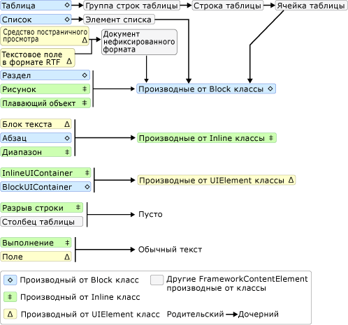
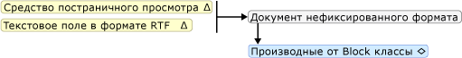
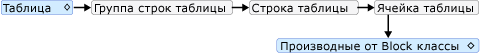
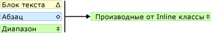
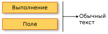

Общие сведения о модели содержимого TextElement
В этом обзоре модель содержимого описываются поддерживаемом содержимом для TextElement. Paragraph Класс — это разновидность TextElement. Модель содержимого описывает объекты/элементы, которые могут содержаться в других объектах. В этом обзоре представлена модель содержимого для объектов, производных от TextElement. Дополнительные сведения см. в разделе Общие сведения о документе нефиксированного.
Схема модели содержимого
На следующей схеме представлена модель содержимого для классов, производных от TextElement а также других отличных TextElement классов, соответствующих этой модели.

Как видно из предыдущей диаграммы, потомки для элемента не обязательно определяются тем, класс, производный от Block класса или Inline класса. Например Span ( Inline-производный класс) может иметь только Inline дочерние элементы, но Figure (также Inline-производный класс) может иметь только Block дочерних элементов. Таким образом, схему можно использовать для быстрого определения элемента, который может содержаться в другом элементе. В качестве примера используем схему, чтобы определить, как создать содержимое нефиксированного RichTextBox.
Объект RichTextBox должен содержать FlowDocument который в свою очередь, должен содержать Block-объект, производный от. Ниже приведен соответствующий сегмент из предыдущей диаграммы.

Разметка может выглядеть следующим образом.
<RichTextBox> <FlowDocument> <!-- One or more Block-derived object… --> </FlowDocument> </RichTextBox>Согласно схеме, существует несколько Block элементов для выбора из в том числе Paragraph, Section, Table, List, и BlockUIContainer (см. классы, производные от Block на схеме выше). Предположим, мы хотим Table. В соответствии с предыдущей схеме Table содержит TableRowGroup содержащий TableRow элементы, которые содержат TableCell элементы, которые содержат Block-объект, производный от. Ниже приведен соответствующий сегмент для Table из предыдущей схемы.

Ниже приведена соответствующая разметка.
<RichTextBox> <FlowDocument> <Table> <TableRowGroup> <TableRow> <TableCell> <!-- One or more Block-derived object… --> </TableCell> </TableRow> </TableRowGroup> </Table> </FlowDocument> </RichTextBox>Опять же один или несколько Block требуются элементы TableCell. Для удобства поместим часть текста в ячейку. Это можно сделать с помощью Paragraph с Run элемент. Ниже приведен соответствующий сегмент из схемы, показывающий, что Paragraph может занять Inline элемент, который Run ( Inline элемент) может принять только обычный текст.


Ниже приведен полный пример в виде разметки.
<Page xmlns="http://schemas.microsoft.com/winfx/2006/xaml/presentation"
xmlns:x="http://schemas.microsoft.com/winfx/2006/xaml">
<RichTextBox>
<FlowDocument>
<!-- Normally a table would have multiple rows and multiple
cells but this code is for demonstration purposes.-->
<Table>
<TableRowGroup>
<TableRow>
<TableCell>
<Paragraph>
<!-- The schema does not actually require
explicit use of the Run tag in markup. It
is only included here for clarity. -->
<Run>Paragraph in a Table Cell.</Run>
</Paragraph>
</TableCell>
</TableRow>
</TableRowGroup>
</Table>
</FlowDocument>
</RichTextBox>
</Page>
Работа с содержимым TextElement с помощью программных средств
Содержание TextElement состоит, коллекций и поэтому программное управление содержимое TextElement объектов выполняется с использованием этих коллекций. Существуют три различные коллекции, используемые TextElement -производные классы:
InlineCollection: Представляет коллекцию элементов Inline. InlineCollection Определяет допустимое дочернее содержимое элементов Paragraph, Span, и TextBlock элементов.
BlockCollection: Представляет коллекцию элементов Block. BlockCollection Определяет допустимое дочернее содержимое элементов FlowDocument, Section, ListItem, TableCell, Floater, и Figure элементов.
ListItemCollection: Элемент содержимого потока, который представляет определенный элемент содержимого в виде упорядоченного или неупорядоченного List.
Можно управлять (добавлять или удалять элементы) из этих коллекций с помощью соответствующих свойств Inlines, блоки, и ListItems. Следующие примеры показывают, как управлять содержимым Span с помощью Inlines свойство.
Note
В таблице используется несколько коллекций для управления содержимым, но они не рассматриваются в данном руководстве. Дополнительные сведения см. в разделе Общие сведения о таблицах.
В следующем примере создается новый Span объекта, а затем используется Add метод для добавления двух текстовых выполняется как дочернего содержимого объекта Span.
Span spanx = new Span();
spanx.Inlines.Add(new Run("A bit of text content..."));
spanx.Inlines.Add(new Run("A bit more text content..."));
В следующем примере создается новый Run элемент и вставляет его в начале Span.
Run runx = new Run("Text to insert...");
spanx.Inlines.InsertBefore(spanx.Inlines.FirstInline, runx);
В следующем примере удаляется последний Inline элемент Span.
spanx.Inlines.Remove(spanx.Inlines.LastInline);
В следующем примере удаляется все содержимое (Inline элементы) из Span.
spanx.Inlines.Clear();
Типы, совместно использующие модель содержимого
Следующие типы наследуют от TextElement класса и может использоваться для отображения содержимого, описанного в этом обзоре.
Bold, Figure, Floater, Hyperlink, InlineUIContainer, Italic, LineBreak, List, ListItem, Paragraph, Run, Section, Span, Table, Underline.
Обратите внимание, что этот список включает только неабстрактные типы, распространяемые с Windows SDK. Вы можете использовать другие типы, наследующие от TextElement.
Типы, которые могут содержать объекты TextElement
См. в разделе модель содержимого WPF.
См. также
- Управление FlowDocument с помощью свойства Blocks
- Управление элементами потокового содержимого с помощью свойства Blocks
- Управление FlowDocument с помощью свойства Blocks
- Управление столбцами таблицы с помощью свойства Columns
- Управление группами строк таблицы пользователя с помощью свойства RowGroups